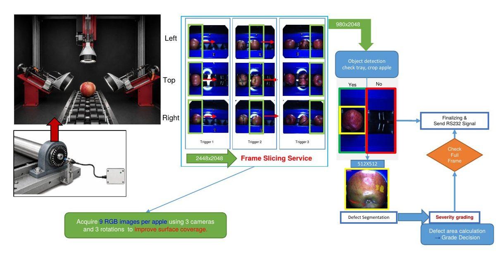
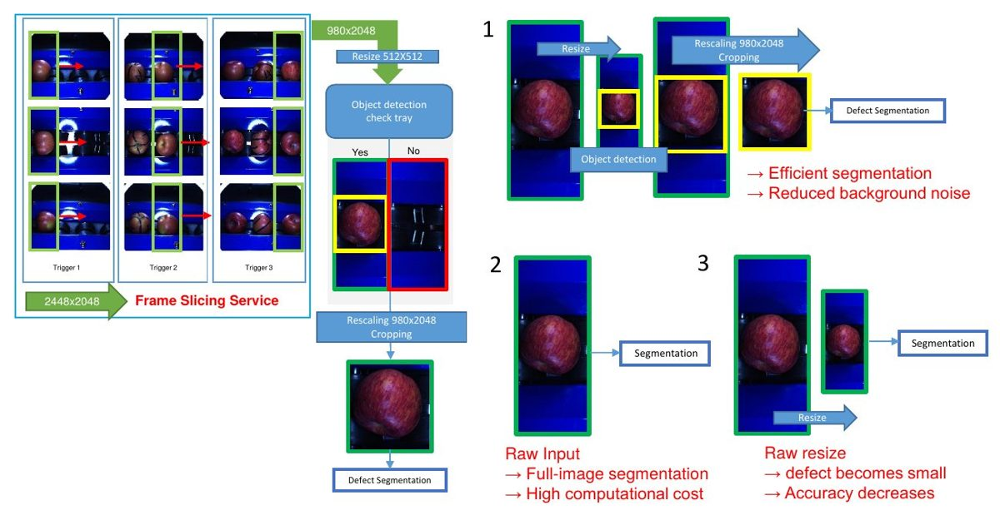
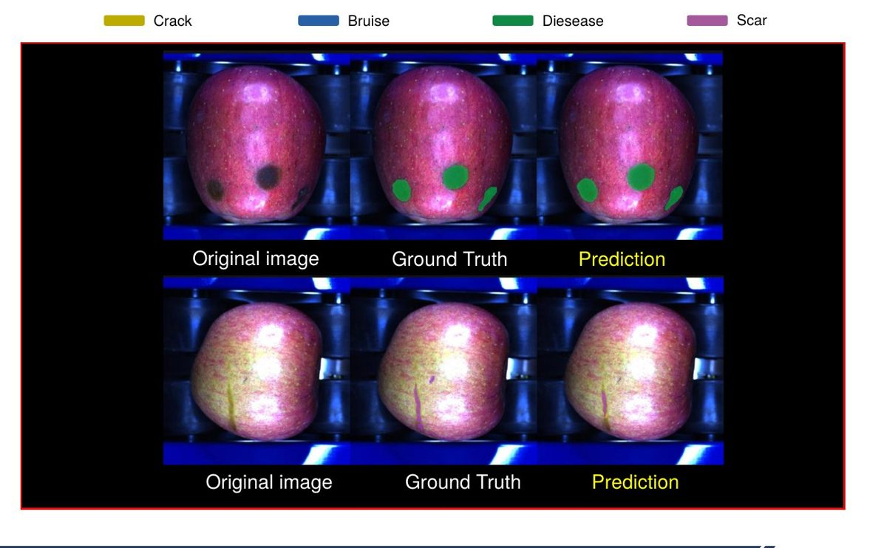
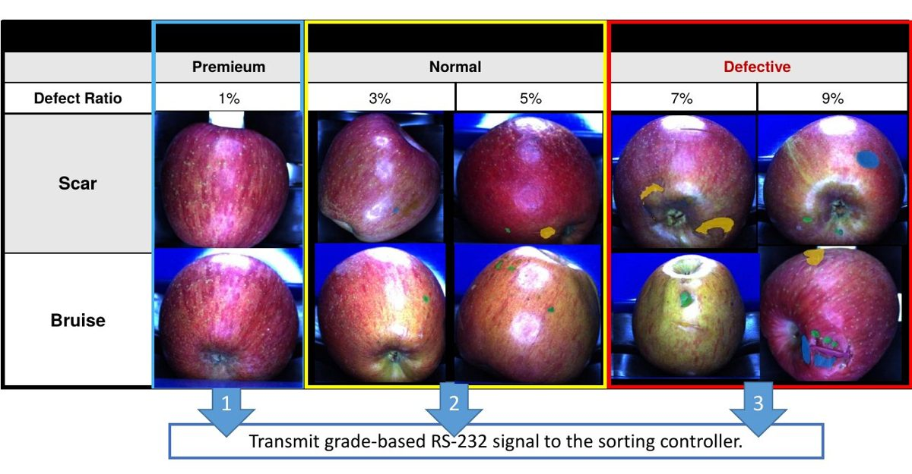

카메라 3대로 촬영한 사과 영상에서 표면 결함을 픽셀 단위로 분할하고, 결함 면적 비율로 등급을 판정하는 선별 파이프라인을 개발함. 사과 검출(YOLO26, 123 FPS)로 ROI를 잘라 분할 모델(SegFormer)에 넣는 구조로 정확도와 속도를 함께 맞췄고, 실제 가동 중인 선별기에서 사과 2,124개를 초당 4.19개로 판정함. 현장 점검에서는 촬영되지 않는 표면을 남은 오판정 원인으로 찾아 촬영 18장 확대와 3차원 형상화를 제안함.
사과는 멍, 상처, 병반, 열과 같은 표면 결함에 따라 등급이 갈리지만, 산지유통센터의 결함 선별은 여전히 작업자의 육안 판정에 의존함. 판정 편차가 크고 처리 속도를 올리기 어려움.
등급은 결함의 유무만이 아니라 종류와 크기로 정해짐. 그래서 결함 위치만 박스로 잡는 객체 탐지가 아니라, 결함 면적을 픽셀 단위로 계산할 수 있는 시맨틱 분할 기반으로 시스템을 설계함. 목표는 촬영부터 등급 판정, 선별 신호 출력까지 이어지는 통합 선별 파이프라인임.

롤러 위를 구르는 사과를 트리거 센서 신호에 맞춰 좌·상·우 카메라 3대(Triton 5MP, 2448×2048)로 촬영함. 사과가 회전하는 동안 3번 촬영해 사과당 9장을 확보하고, 한 시점에서 보이지 않는 면을 다른 시점이 보완하도록 구성함. 추론은 RTX 5070 Ti 워크스테이션에서 수행.
| 구분 | 내용 |
|---|---|
| 사과 검출 | Grounding DINO(텍스트 프롬프트 'Apple')로 박스 라벨 자동 생성 후 검수 · 사과 있음 940장 / 빈 트레이 118장 |
| 결함 분할 | 후지 품종 결함 이미지 900장 · Crack, Bruise, Disease, Scar 4종 · 학습:검증:테스트 = 8:1:1 |

2448×2048 원본을 그대로 분할 모델에 넣으면 연산량이 커서 선별 속도를 맞출 수 없고, 통째로 512×512로 줄이면 작은 결함이 몇 픽셀로 뭉개져 정확도가 떨어짐.
그래서 프레임을 사과 단위로 자른 뒤, 가벼운 검출 모델로 트레이에 사과가 있는지 먼저 확인하고 사과 영역만 크롭해 분할 모델에 넣는 구조로 설계함. 빈 트레이는 분할을 건너뛰어 연산을 줄이고, 배경 노이즈도 함께 줄임.
| 모델 | mAP@0.5 | mAP@[.5:.95] | 속도 (TensorRT, FP32) |
|---|---|---|---|
| RT-DETR (ResNet-18) | 1.00 | 0.97 | 73.81 FPS · 13.55 ms/img |
| YOLO26 | 1.00 | 0.99 | 123.08 FPS · 8.12 ms/img |
테스트 1,058장 · 입력 640×640
두 모델의 정확도는 사실상 같았음. 선별기는 매 프레임 검출이 먼저 끝나야 다음 단계로 넘어가므로, 정확도가 같다면 속도가 1.67배 빠른 YOLO26을 채택함.
| 모델 | Crack | Bruise | Disease | Scar | mIoU | 추론 시간 |
|---|---|---|---|---|---|---|
| Mask2Former (Swin-S) | 64.2 | 62.2 | 53.6 | 52.4 | 58.1 | 18.78 ms/img |
| SegFormer (MiT-B5) | 58.4 | 63.3 | 55.7 | 49.3 | 56.7 | 10.42 ms/img |
IoU(%) · 입력 512×512 · TensorRT, FP32

mIoU 차이는 1.4%p인 반면 추론은 SegFormer가 1.8배 빨랐음. 사과 한 개당 9장을 처리해야 하는 구조라 장당 시간이 전체 처리량을 좌우하므로 SegFormer를 채택함.

분할 결과에서 결함 면적 비율 = 결함 픽셀 면적 ÷ 사과 픽셀 면적 × 100을 계산하고, 사과 한 개의 9장 판정이 모두 끝난 뒤 최종 등급을 확정함. 등급은 특(Premium), 보통(Normal), 불량(Defective) 3단계이며, 기준은 선별기 업체와 협의해 정함. 확정된 등급은 RS-232 신호로 선별 제어기에 전달되어 등급별 배출구로 분기됨.
| 항목 | 결과 |
|---|---|
| 평가한 사과 | 2,124개 (실제 가동 중인 컨베이어) |
| 처리 속도 | 초당 4.19개 · 판정 간격 238.6 ms |
| 출력 | 등급 판정 → RS-232 신호 → 배출구 3개로 분류 |
실제 가동 중인 선별기에서 검출, 분할, 등급 판정이 한 파이프라인으로 실시간 동작하는 것을 확인함.
현장 운용을 점검하면서 연구실 결과와 현장 결과 사이의 차이를 추적함. 수백 개의 사과를 반복 투입하며 판정 결과와 촬영 영상을 대조한 결과, 사과마다 크기와 형상, 회전 상태가 달라 객체당 9장으로는 표면 일부가 촬영되지 않는 경우가 있었음.
모델 정확도만이 아니라 선별기가 요구하는 처리 속도와 결함 크기를 기준으로 전처리 구조와 모델을 골랐고, 그 결과 실제 컨베이어에서 초당 약 4.2개를 실시간 판정함. 현장 점검에서는 남은 오판정의 원인을 모델이 아닌 촬영 조건에서 찾아 다음 개선 방향을 제시함.
촬영 18장 확대와 3차원 형상화는 참여 기간(2026.08 종료) 중 제안·검토 단계까지 진행함.